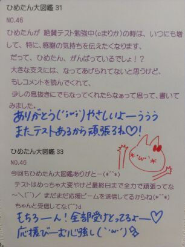

| 2013/02 10 Sun | ひめたん(*>ω<*)そ の260 |
ブログお久しぶりになってしまいました
楽しみにしてくださっていたみなさん
ごめんなさいお待たせしました(´;ω;`)
友達のなつきちゃんにも
とうとう言われてしまいましたね
「中元ブログ書け笑」と。笑
ひめたんのために
日曜日の朝にわざわざ連絡くれたわけです
そんななつきが私は大好きですっと。 .
...棒読みしたって
一週間も待ってくれたなつきは
おこおこ(｀・ω・´)だと思ったので
今日はここでもうひとつ。
ねえーなつきー
ごめんーごめんってばーねえー
これからはちゃんとするからーねえ
...そうだよね
なつきは心配してくれたんだもんね。
そんななつきが好きだよっ///
だから許して？ね？
...これでなつきは許してくれるはず
許してくれるどころか
爆笑してるんだろうなきっと。ふへっ
そして、なつきと一緒に
ずっと更新待ってくれたひめきゅんさん
なつきに宛てたメッセージを
あなたの名前にかえて読んでみてね！
どうかな。許してくれるかな(^^)
てことで5th製作期間終了！
次からはライブの練習が
ばしばし入ってくるそうでごわすー
ライブ練習かー好きだなー！
おととい昨日は撮影でしたっ
詳しいことはまだ言えないんだけれども
なんていうかな、
ドキドキしました(ω)
メンバーみんなに改めて惚れました。ええ
はよ情報解禁こいこいこい！
昨日みんなと撮った写めとか
貼りたいんだけどね
ちょっと衣装の問題とかあって
そうもいかないんだよねー
ひめたんひとりの写真ならあるよー

あ、ほらこの写めの
ちま (樋口日奈chan)がかわいかったから
変に加工するのはやめました(^^)
2ショ ふはは
楽しみにしてくださっていたみなさん
ごめんなさいお待たせしました(´;ω;`)
友達のなつきちゃんにも
とうとう言われてしまいましたね
「中元ブログ書け笑」と。笑
ひめたんのために
日曜日の朝にわざわざ連絡くれたわけです
そんななつきが私は大好きですっと。 .
...棒読みしたって
一週間も待ってくれたなつきは
おこおこ(｀・ω・´)だと思ったので
今日はここでもうひとつ。
ねえーなつきー
ごめんーごめんってばーねえー
これからはちゃんとするからーねえ
...そうだよね
なつきは心配してくれたんだもんね。
そんななつきが好きだよっ///
だから許して？ね？
...これでなつきは許してくれるはず
許してくれるどころか
爆笑してるんだろうなきっと。ふへっ
そして、なつきと一緒に
ずっと更新待ってくれたひめきゅんさん
なつきに宛てたメッセージを
あなたの名前にかえて読んでみてね！
どうかな。許してくれるかな(^^)
てことで5th製作期間終了！
次からはライブの練習が
ばしばし入ってくるそうでごわすー
ライブ練習かー好きだなー！
おととい昨日は撮影でしたっ
詳しいことはまだ言えないんだけれども
なんていうかな、
ドキドキしました(ω)
メンバーみんなに改めて惚れました。ええ
はよ情報解禁こいこいこい！
昨日みんなと撮った写めとか
貼りたいんだけどね
ちょっと衣装の問題とかあって
そうもいかないんだよねー
ひめたんひとりの写真ならあるよー
あ、ほらこの写めの
ちま (樋口日奈chan)がかわいかったから
変に加工するのはやめました(^^)
2ショ ふはは

 ひめたんって学校の友達からは
ひめたんって学校の友達からは
何て呼ばれてるんですか？
ひめか！が多いかなー
ひめたんーひめちゃんーもちらほら。
ひめたんって呼び方以外に
呼ばれて嬉しい呼び方ある？
誹謗中傷さえなければ←
基本名前呼ばれるの好きだよ＼(^^)／
姉さんには「ひめすけー」と呼ばれる。
ひめたんは、授業の世界史は好き？
嫌いじゃないけど
カタカナばっかしで眠たいってのは
あるかな多少...。ふあ
ひめたんは男装してみたい？
似合う自信がない。
せっかく男装するんなら、やっぱし
いけめんになりたいじゃんっ！ね♪
若様(男装)と1日デートが出来るとしたら、
どんなデートがしてみたい??
いつか、あたしは女の子な格好で
若月はかっこいい格好で
デート行こうぜ！って約束したの(*^^*)
んーどうかなー基本的には
若月にお任せするつもりだけれども
街をふらふらお散歩するの楽しそうー！
team*若月に入ってます 質問？お願い？
ひめたんの愛をひとかけらください！
若月は、そりゃあもう
team*若月のみなさんのこと
本気で愛してるからご安心ください(ω)きゃ
そしてそんな若月のこと
旦那さんとして好きでありながら、
アイドルとして尊敬してます。
そしてteam*若月 のみなさんのこと
私も大好きです。
はっ
ひめきゅんさんももちろん大好きだよ！
"車で"デートならどこに行きたいですか？？
海、山、遊園地とか、夜景とか★、
道の駅？！ ○霊スポット！！廃墟とか？ｗ
怖いとこには
車でもジェットでも行かなーい！
遊園地も悪くないけど、車なら
ひたすら景色をみるのも悪くない(´ω`)
でも東京で車のると酔います
広島人ですどうも←
将来、結婚したら、
どんな奥さんになりたいですか？
エプロンが似合って、いつも
お菓子とか作ってるような
可愛いお嫁さんになりたいけど
きっと無理だと思われまーす(*>ω<*)
将来生まれ変われるとしたら
何になりたい？(人間以外で!)
ねこちゃん！
5歳のおんなのこに飼われたいです＊
盲導犬もいいかな。
盲導犬訓練士さんに憧れた時期も
そういえばあったなー(遠い目)
ひめたんの旦那様な若様が
羨ましくて羨ましくて仕方ないです。
私もひめたんの旦那になりたいけど
でも若様には到底敵わないので、どこか
空いてるポジションに埋まりたいです！
ひめたん&若様一家の
どこのポジションなら空いてますか？
きゃんっ∩^ω^∩
嬉しいよーとっても嬉しいよー！
じゃあひとついいこと教えるねー＊
今ねひめたんね、旦那さんは若月、
彼氏さんはひめきゅんさんがいるけど
彼女さんはいないんだー
だから彼女さん枠なら空いてるよっ？
あたし全力で尽くすよ？ねっ///
やっぱり、ブログってのは
ふぁみりーさんと直接触れ合える
貴重な場でありますからねー
あんまし宣言するのは好きじゃないけど
もう少し頑張って、
もう少し更新できるよう
努めようと思っておりますー
ので！
みなさんぜひ！
これからも読んでね(´・ω・｀)にやり

(＊´・ω・＊)ひめたん
コメント(193)
2013/02/10 21:18